Colocando sua aplicação na nuvem com o Openshift
Criado por Josenaldo de Oliveira Matos Filho / @josenaldomatos
Quem sou
- Josenaldo de Oliveira Matos Filho
- Há 10 anos transformando cafeína em código fonte
- Não importa qual nome bonito você dê ao cargo, eu faço programa! Julguem-me!
Aviso
Essa apresentação é baseada no livro "Getting Started with OpenShift: A Guide For Impatient Beginners"
Isso não é um curso!
IAAS
Infraestrutura como Serviço
SAAS
Software como Serviço
PASS
Plataforma como Serviço
Versões do Openshift
Alguns termos...
- Application
- Gear
-
Cartridge
- Standalone
- Embeded
- Scalable application
- Client tools, Web Console, or Eclipse plug-ins
Algumas tecnologias...
- SSH
- Git
- Eclipse
Autobots, Roll Out!